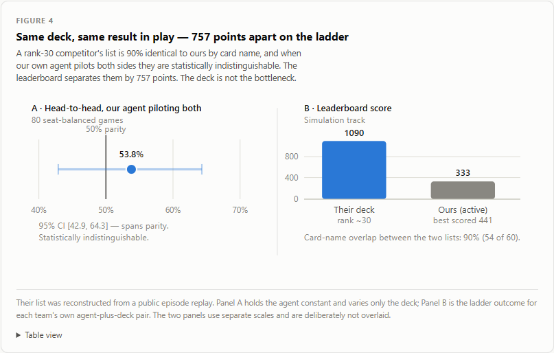
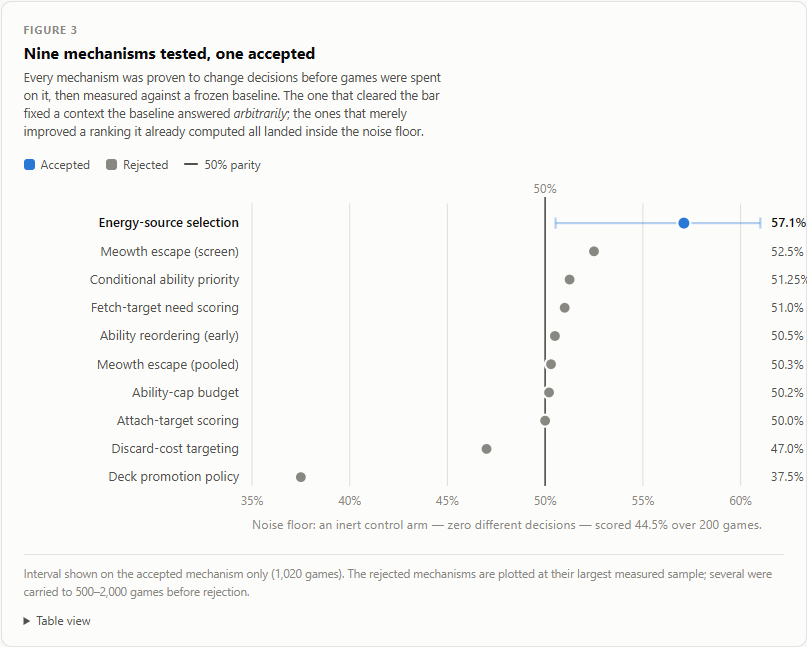
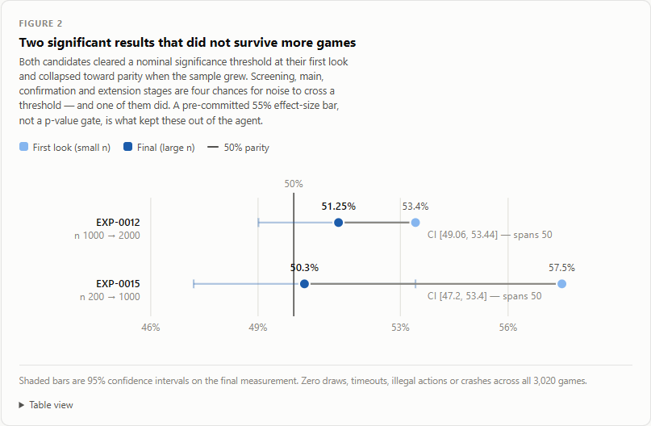
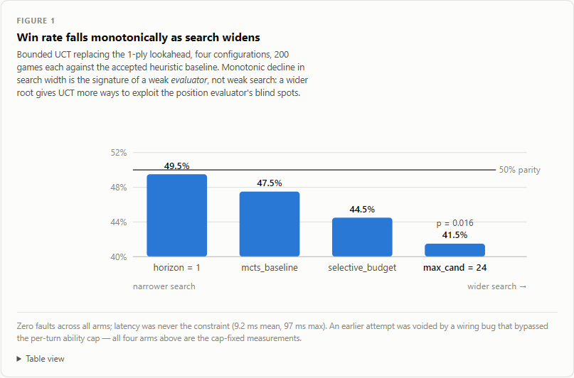

<title>Evaluator, Not the Deck</title>
<style>
  @import url('https://fonts.googleapis.com/css2?family=Fraunces:opsz,wght@9..144,400;9..144,500;9..144,600;9..144,700&family=Inter:wght@400;500;600;700&family=JetBrains+Mono:wght@400;500;600&display=swap');

  :root {
    --paper: #f7f5f0;
    --paper-raised: #fffefb;
    --ink: #1c1b19;
    --ink-soft: #4a4740;
    --muted: #77716a;
    --line: #ded9cf;
    --accent: #4f6d4a;
    --accent-strong: #35492f;
    --accent-tint: #e8efe4;
    --bad: #9a4a3a;
    --bad-tint: #f5e9e5;
    --shadow: 0 1px 2px rgba(28,27,25,0.04), 0 8px 24px -12px rgba(28,27,25,0.12);
  }

  @media (prefers-color-scheme: dark) {
    :root:not([data-theme="light"]) {
      --paper: #17160f;
      --paper-raised: #201f18;
      --ink: #efe9dd;
      --ink-soft: #cdc6b8;
      --muted: #948c7c;
      --line: #38352b;
      --accent: #8fb586;
      --accent-strong: #b6d4ae;
      --accent-tint: #232c1f;
      --bad: #d98a78;
      --bad-tint: #2e211d;
      --shadow: 0 1px 2px rgba(0,0,0,0.3), 0 8px 24px -12px rgba(0,0,0,0.5);
    }
  }
  :root[data-theme="dark"] {
    --paper: #17160f;
    --paper-raised: #201f18;
    --ink: #efe9dd;
    --ink-soft: #cdc6b8;
    --muted: #948c7c;
    --line: #38352b;
    --accent: #8fb586;
    --accent-strong: #b6d4ae;
    --accent-tint: #232c1f;
    --bad: #d98a78;
    --bad-tint: #2e211d;
    --shadow: 0 1px 2px rgba(0,0,0,0.3), 0 8px 24px -12px rgba(0,0,0,0.5);
  }

  * { box-sizing: border-box; }
  body {
    background: var(--paper);
    color: var(--ink);
    font-family: 'Inter', system-ui, sans-serif;
    line-height: 1.6;
    font-size: 16px;
  }
  ::selection { background: var(--accent-tint); color: var(--accent-strong); }

  h1, h2, h3, .display {
    font-family: 'Fraunces', Georgia, serif;
    text-wrap: balance;
    letter-spacing: -0.01em;
  }

  a { color: var(--accent-strong); }
  code, .mono, .num { font-family: 'JetBrains Mono', ui-monospace, monospace; }

  .wrap { max-width: 920px; margin: 0 auto; padding: 0 24px; }

  /* ---------- nav ---------- */
  nav {
    position: sticky; top: 0; z-index: 20;
    background: color-mix(in srgb, var(--paper) 88%, transparent);
    backdrop-filter: blur(8px);
    border-bottom: 1px solid var(--line);
  }
  nav .wrap {
    display: flex; align-items: center; gap: 20px;
    padding-top: 12px; padding-bottom: 12px;
    max-width: 1040px;
  }
  nav .brand {
    font-family: 'Fraunces', serif; font-weight: 600; font-size: 0.95rem;
    white-space: nowrap; color: var(--accent-strong);
  }
  nav ul {
    list-style: none; margin: 0; padding: 0;
    display: flex; gap: 4px; flex-wrap: wrap;
    font-size: 0.82rem;
  }
  nav a {
    text-decoration: none; color: var(--muted);
    padding: 6px 10px; border-radius: 6px;
  }
  nav a:hover { background: var(--accent-tint); color: var(--accent-strong); }

  /* ---------- hero ---------- */
  header.hero { padding: 56px 0 40px; }
  .eyebrow {
    display: inline-flex; align-items: center; gap: 8px;
    font-size: 0.72rem; letter-spacing: 0.08em; text-transform: uppercase;
    color: var(--muted); margin-bottom: 18px;
  }
  .eyebrow::before {
    content: ""; width: 6px; height: 6px; border-radius: 50%;
    background: var(--accent); display: inline-block;
  }
  h1.title {
    font-size: clamp(2rem, 4.4vw, 3rem);
    font-weight: 600; line-height: 1.08; margin: 0 0 16px;
    max-width: 15ch;
  }
  p.subtitle {
    font-size: 1.15rem; color: var(--ink-soft); max-width: 62ch;
    margin: 0 0 28px; font-weight: 400;
  }

  .stat-callout {
    background: var(--paper-raised);
    border: 1px solid var(--line);
    border-left: 4px solid var(--accent);
    border-radius: 10px;
    padding: 22px 26px;
    box-shadow: var(--shadow);
    display: grid; gap: 6px;
  }
  .stat-callout .headline {
    font-family: 'Fraunces', serif; font-weight: 600;
    font-size: 1.25rem; line-height: 1.35;
  }
  .stat-callout .thesis { color: var(--accent-strong); font-weight: 600; }
  .stat-callout .proof-link { font-size: 0.85rem; color: var(--muted); }

  .stat-row {
    display: grid; grid-template-columns: repeat(3, 1fr); gap: 1px;
    background: var(--line); border: 1px solid var(--line);
    border-radius: 10px; overflow: hidden; margin-top: 32px;
  }
  .stat-tile {
    background: var(--paper-raised); padding: 20px 18px;
  }
  .stat-tile .n {
    font-family: 'JetBrains Mono', monospace; font-weight: 600;
    font-size: 1.7rem; color: var(--accent-strong);
    font-variant-numeric: tabular-nums;
  }
  .stat-tile .label { font-size: 0.82rem; color: var(--muted); margin-top: 4px; }

  /* ---------- sections ---------- */
  section { padding: 44px 0; border-top: 1px solid var(--line); }
  section > .wrap > h2 {
    font-size: 1.5rem; font-weight: 600; margin: 0 0 6px;
    display: flex; align-items: baseline; gap: 10px;
  }
  section > .wrap > h2 .sec-no {
    font-family: 'JetBrains Mono', monospace; font-size: 0.85rem;
    color: var(--muted); font-weight: 500;
  }
  section > .wrap > .kicker {
    color: var(--muted); font-size: 0.95rem; margin: 0 0 26px; max-width: 60ch;
  }

  .tldr-list { list-style: none; margin: 20px 0 0; padding: 0; display: grid; gap: 14px; }
  .tldr-list li {
    padding-left: 22px; position: relative;
  }
  .tldr-list li::before {
    content: "→"; position: absolute; left: 0; color: var(--accent); font-weight: 600;
  }
  .tldr-list strong { color: var(--ink); }

  figure { margin: 24px 0 0; }
  figure img {
    width: 100%; display: block; border-radius: 10px;
    border: 1px solid var(--line); background: var(--paper-raised);
    box-shadow: var(--shadow);
  }
  figcaption {
    font-size: 0.85rem; color: var(--muted); margin-top: 10px;
    max-width: 65ch;
  }
  figcaption .fig-no { color: var(--accent-strong); font-weight: 600; }

  .prose p { max-width: 68ch; }
  .prose { display: grid; gap: 14px; }

  table.data {
    width: 100%; border-collapse: collapse; font-size: 0.88rem;
    background: var(--paper-raised); border: 1px solid var(--line); border-radius: 10px;
    overflow: hidden;
  }
  table.data th, table.data td {
    padding: 9px 12px; text-align: left; border-bottom: 1px solid var(--line);
  }
  table.data th {
    font-size: 0.72rem; text-transform: uppercase; letter-spacing: 0.04em;
    color: var(--muted); font-weight: 600; background: var(--accent-tint);
  }
  table.data td.num, table.data th.num { font-family: 'JetBrains Mono', monospace; font-variant-numeric: tabular-nums; text-align: right; }
  table.data tr:last-child td { border-bottom: none; }
  .table-scroll { overflow-x: auto; margin-top: 20px; }

  .pill {
    display: inline-block; padding: 2px 9px; border-radius: 999px;
    font-size: 0.72rem; font-weight: 600; font-family: 'Inter', sans-serif;
  }
  .pill.accepted { background: var(--accent-tint); color: var(--accent-strong); }
  .pill.rejected { background: var(--bad-tint); color: var(--bad); }

  blockquote {
    margin: 20px 0 0; padding: 16px 20px; border-left: 3px solid var(--accent);
    background: var(--accent-tint); border-radius: 0 8px 8px 0;
    font-size: 0.95rem; color: var(--ink-soft);
  }

  /* deck cards */
  .deck-grid { display: grid; grid-template-columns: 1fr 1fr; gap: 16px; margin-top: 22px; }
  @media (max-width: 640px) { .deck-grid { grid-template-columns: 1fr; } }
  .deck-card {
    background: var(--paper-raised); border: 1px solid var(--line); border-radius: 10px;
    padding: 18px 20px; box-shadow: var(--shadow);
  }
  .deck-card h3 { font-size: 1.02rem; margin: 0 0 4px; font-weight: 600; }
  .deck-card .result { font-family: 'JetBrains Mono', monospace; color: var(--bad); font-weight: 600; font-size: 1.4rem; }
  .deck-card p { font-size: 0.88rem; color: var(--muted); margin: 8px 0 0; }

  /* explorer */
  .explorer-controls {
    display: flex; gap: 10px; flex-wrap: wrap; margin-bottom: 16px; align-items: center;
  }
  .explorer-controls input, .explorer-controls select {
    font-family: 'Inter', sans-serif; font-size: 0.85rem;
    border: 1px solid var(--line); background: var(--paper-raised); color: var(--ink);
    padding: 7px 11px; border-radius: 7px;
  }
  .explorer-controls input:focus, .explorer-controls select:focus, th button:focus-visible {
    outline: 2px solid var(--accent); outline-offset: 1px;
  }
  .explorer-controls input { flex: 1; min-width: 180px; }
  th button {
    background: none; border: none; font: inherit; color: inherit; cursor: pointer;
    padding: 0; text-transform: inherit; letter-spacing: inherit; display: flex; gap: 4px; align-items: center;
  }
  .sort-arrow { font-size: 0.65rem; color: var(--accent); }
  .note-cell { max-width: 320px; color: var(--ink-soft); font-size: 0.83rem; }
  .csv-link { font-size: 0.82rem; color: var(--muted); margin-top: 12px; display: block; }

  footer {
    border-top: 1px solid var(--line); padding: 36px 0 48px;
  }
  footer .wrap { display: flex; justify-content: space-between; flex-wrap: wrap; gap: 12px; font-size: 0.82rem; color: var(--muted); }
  footer a { color: var(--muted); }

  @media (prefers-reduced-motion: no-preference) {
    .reveal { animation: rise 0.5s ease both; }
    @keyframes rise { from { opacity: 0; transform: translateY(8px);} to { opacity: 1; transform: translateY(0);} }
  }
</style>

<nav>
  <div class="wrap">
    <span class="brand">Grass Toolbox — Field Notes</span>
    <ul>
      <li><a href="#tldr">TL;DR</a></li>
      <li><a href="#evidence">Evidence</a></li>
      <li><a href="#limits">Limits</a></li>
      <li><a href="#deck">Deck</a></li>
      <li><a href="#didnt-work">What Didn't Work</a></li>
      <li><a href="#explorer">All 15 Experiments</a></li>
    </ul>
  </div>
</nav>

<header class="hero reveal">
  <div class="wrap">
    <div class="eyebrow">Pokémon TCG AI Battle Challenge — Strategy Writeup</div>
    <h1 class="title">Measuring What Actually Moves a Pokémon TCG Agent</h1>
    <p class="subtitle">Nine mechanisms tested, one accepted: a negative-results program that separates deck strength from agent strength — and finds the bottleneck is the evaluator.</p>

    <div class="stat-callout">
      <div class="headline">90% identical deck. Statistical tie in play. ~700 leaderboard points apart.</div>
      <div class="thesis">The bottleneck is the agent — not the deck.</div>
      <div class="proof-link">Proof in §2.1, Figure 4 ↓</div>
    </div>

    <div class="stat-row">
      <div class="stat-tile"><div class="n">9 / 1</div><div class="label">mechanisms tested / accepted</div></div>
      <div class="stat-tile"><div class="n">24%</div><div class="label">of card pool the agent can't see (variable-damage bug)</div></div>
      <div class="stat-tile"><div class="n">2</div><div class="label">"significant" results that didn't replicate</div></div>
    </div>
  </div>
</header>

<section id="tldr">
  <div class="wrap">
    <h2><span class="sec-no">§0</span> TL;DR</h2>
    <p class="kicker">For the reviewer with two minutes: the whole submission in five findings.</p>
    <div class="prose">
      <p>I built a heuristic Pokémon TCG agent, then spent most of my effort trying to disprove my own improvements. Nine agent mechanisms were tested against pre-committed thresholds; <strong>one was accepted, eight were rejected</strong>, and two apparently-significant results evaporated when the sample size grew. The single accepted change (+7 points) fixed a decision context the baseline answered <em>at random</em> — not a ranking it already computed. That distinction predicted every subsequent result.</p>
    </div>
    <ul class="tldr-list">
      <li><strong>Fix arbitrary decisions, not existing rankings.</strong> Mechanisms correcting contexts the baseline answered arbitrarily won (+7 pts). Mechanisms refining rankings it already computed measured 50.5%, 51.0%, 50.2%, 50.0%, 47.0% — indistinguishable from zero.</li>
      <li><strong>More search made things monotonically worse</strong> (49.5% → 47.5% → 44.5% → 41.5% as search width grew) — the signature of a weak <em>evaluator</em>, not weak search.</li>
      <li><strong>Two nominally-significant results did not replicate.</strong> One stood at 53.4% (p=0.0315, n=1000) and fell to 51.25% at n=2000. A pre-committed effect-size bar, not a p-value gate, is what prevented adopting it.</li>
      <li><strong>The agent is structurally blind to 24% of the card pool.</strong> The engine reports variable-damage attacks (<code>50×</code>) as <code>damage=0</code>, and the ranking reads that field.</li>
    </ul>
    <blockquote>
      Context — <a href="https://www.kaggle.com/competitions/pokemon-tcg-ai-battle" target="_blank" rel="noopener">Simulation competition</a> · <a href="https://www.kaggle.com/competitions/pokemon-tcg-ai-battle/data" target="_blank" rel="noopener">Competition data</a>
    </blockquote>
  </div>
</section>

<section id="approach">
  <div class="wrap">
    <h2><span class="sec-no">§1</span> Approach and rationale</h2>
    <div class="prose">
      <p>The agent is a <strong>priority ladder with a 1-ply lookahead</strong>. On each MAIN decision it evaluates every legal option by forking the real engine, applying the option, playing the rest of the turn greedily, and scoring the resulting board. Where search fails, it falls back to a fixed ordering:</p>
    </div>
    <blockquote>lethal attack → evolve → attach Energy → develop bench → ability → best attack → retreat if dying → end turn</blockquote>
    <div class="prose">
      <p>The ordering is deliberate. Lethal is first because a prize taken is irreversible. Evolution precedes attachment because evolution is free while attachment is the scarce once-per-turn resource. Attacking sits <em>below</em> board development because developing compounds and a marginal attack does not.</p>
      <p><strong>What the ladder rests on is that the win condition is prizes, not damage.</strong> A deck that dealt 4.4× more printed damage than its opponent still lost, because 10 of its 14 Pokémon were Rule Box cards conceding 2 prizes each.</p>
      <p>I also established early that <strong>agent quality and deck choice are coupled</strong>. The same lookahead code measured 64.6% on one deck and 45% on another. "This agent is better" is incomplete without naming the deck — a constraint that shaped the entire protocol below.</p>
    </div>
  </div>
</section>

<section id="evidence">
  <div class="wrap">
    <h2><span class="sec-no">§2</span> Evidence: three findings, each with its test</h2>
    <p class="kicker">2.1 The deck is not the bottleneck &nbsp;·&nbsp; 2.2 Fix arbitrary decisions &nbsp;·&nbsp; 2.3 A 24%-wide blind spot</p>

    <h3 style="font-size:1.1rem;margin:0 0 10px;">2.1 &nbsp;The deck is not the bottleneck (controlled comparison)</h3>
    <div class="prose">
      <p>I reconstructed a rank-30 competitor's deck from a public episode replay and compared it to my own.</p>
    </div>
    <div class="table-scroll">
      <table class="data">
        <thead><tr><th></th><th>Their deck</th><th>My deck</th></tr></thead>
        <tbody>
          <tr><td>Card-name overlap</td><td><strong>90%</strong> (54/60 identical)</td><td>—</td></tr>
          <tr><td>Head-to-head, my agent piloting both, 80 seat-balanced games</td><td>53.8% [42.9–64.3]</td><td><strong>statistical tie</strong></td></tr>
          <tr><td>Leaderboard score</td><td class="num">~1090</td><td class="num">333 (active) / 441 (best)</td></tr>
        </tbody>
      </table>
    </div>
    <figure>
      
      <figcaption><span class="fig-no">Figure 4.</span> Deck-vs-agent decomposition — near-identical decks, a statistical tie in play, and a ~700-point leaderboard gap.</figcaption>
    </figure>
    <div class="prose">
      <p>Two decks that are 90% the same list and tie in play, separated by ~700 leaderboard points. <strong>The gap is the agent, not the deck.</strong> This comparison redirected all remaining effort away from deck construction.</p>
      <p>Their six-slot edge is instructive anyway: they cut four scattered 1-ofs and bought search with the slots (+2 Ultra Ball, +1 Forest of Vitality, +1 Dawn, +1 Meowth ex, +1 Energy), and run <strong>zero Mega ex</strong> — 29 prizes conceded across 20 Pokémon, the lowest of any list measured.</p>
    </div>

    <h3 style="font-size:1.1rem;margin:36px 0 10px;">2.2 &nbsp;Fix arbitrary decisions, not existing rankings</h3>
    <div class="prose">
      <p>The accepted mechanism (<strong>EXP-0005</strong>) came from noticing that <code>SelectType.ENERGY</code> fell through to a blind <code>range(minCount)</code> default. Every Solar Transfer and Energy Switch <em>source</em> — 44 selections per 10 games — was chosen arbitrarily. The deck's own energy engine was disarming its ready attacker.</p>
    </div>
    <div class="table-scroll">
      <table class="data">
        <thead><tr><th>Stage</th><th>Result</th><th class="num">Win rate</th><th class="num">p</th></tr></thead>
        <tbody>
          <tr><td>Smoke</td><td>13–7</td><td class="num">65.0%</td><td class="num">—</td></tr>
          <tr><td>Screening</td><td>112–88</td><td class="num">56.0%</td><td class="num">0.090</td></tr>
          <tr><td>Main</td><td>174–126</td><td class="num">58.0%</td><td class="num">0.0056</td></tr>
          <tr><td>Confirmation</td><td>283–217</td><td class="num">56.6%</td><td class="num">0.0032</td></tr>
          <tr style="background:var(--accent-tint);"><td><strong>Aggregate (1020 games)</strong></td><td><strong>582–438</strong></td><td class="num"><strong>57.1%</strong></td><td class="num">CI 52.2–60.9%</td></tr>
        </tbody>
      </table>
    </div>
    <div class="prose">
      <p>It generalized: the same fix improved play on two <em>foreign</em> decks by the same magnitude (58.0%, 56.5%), indicating a general repair rather than a deck-specific hack.</p>
    </div>
    <figure>
      
      <figcaption><span class="fig-no">Figure 3.</span> All nine mechanisms tested. Eight cluster on the 50% line; the accepted fix (§2.2) is the outlier.</figcaption>
    </figure>
    <div class="prose">
      <p><strong>The eight rejections then formed a pattern.</strong> Mechanisms improving a ranking the baseline <em>already computed</em> went nowhere: 50.5%, 51.0%, 50.2%, 50.0%, 47.0%. Mechanisms reallocating a resource the accepted fix depended on actively lost (45.0%). The rule — <em>fix what is arbitrary, not what is merely imperfect</em> — was derived from data, not assumed.</p>
    </div>

    <h3 style="font-size:1.1rem;margin:36px 0 10px;">2.3 &nbsp;The agent cannot see 24% of the card pool</h3>
    <div class="prose">
      <p>The engine reports variable-damage attacks (printed <code>50×</code>) as <code>damage=0</code>, and <code>_best_attack_index</code> ranks attacks by exactly that field. <strong>381 of 1556 engine attacks (24%) are tied at zero</strong> and picked by list order.</p>
      <p>Demonstrated on Mega Gardevoir ex, whose Mega Symphonia scales at 50 damage per Psychic Energy in play. Across 10 games the agent parked on a 120-printed-damage Basic (334 steps Active) over the card that actually hits for 200–400 (55 steps). Patching <em>only the agent's view of that one number</em>, deck untouched, moved the matchup <strong>20% → 37%</strong>.</p>
    </div>
  </div>
</section>

<section id="limits">
  <div class="wrap">
    <h2><span class="sec-no">§3</span> Generalization and the limits of my own measurements</h2>
    <div class="prose">
      <p><strong>My early benchmarks were structurally blind.</strong> Self-play against a frozen copy of myself on a mirrored deck reported 99% vs random and 60/40 vs prior-self — while the ladder said otherwise. A mirror cannot expose a deck-consistency failure, because both sides brick identically. The metric was not noisy — it was <em>measuring the wrong thing</em>.</p>
      <p><strong>A 200-game screen cannot distinguish 45% from 55%.</strong> I measured the noise floor directly with an <strong>inert control arm</strong> — a candidate making zero different decisions across 49 selections — which scored <strong>44.5% over 200 games</strong> purely from run-to-run variance. Screens filter gross regressions and inertness, not small gains.</p>
    </div>
    <figure>
      
      <figcaption><span class="fig-no">Figure 2.</span> Two nominally-significant early reads (EXP-0012, EXP-0015) both regressed to a statistical tie as sample size grew.</figcaption>
    </figure>
    <div class="table-scroll">
      <table class="data">
        <thead><tr><th>Experiment</th><th>Early look</th><th>Final</th></tr></thead>
        <tbody>
          <tr><td>EXP-0012</td><td>53.4%, p=0.0315, n=1000</td><td><strong>51.25%</strong>, CI [49.06, 53.44], n=2000</td></tr>
          <tr><td>EXP-0015</td><td>57.5%, p=0.034, n=200</td><td><strong>50.3%</strong>, CI [47.2, 53.4], n=1000</td></tr>
        </tbody>
      </table>
    </div>
    <div class="prose">
      <p>Both were multiple-looks artifacts: screening, main, confirmation and extension are four chances for noise to cross a threshold, and one of them did. <strong>A pre-committed 55% effect-size bar prevented adoption; a p-value gate alone would have accepted EXP-0012.</strong> The single most useful thing learned in this project.</p>
      <p>Every accepted or rejected mechanism was additionally <strong>proven non-inert before games were spent</strong> (by diffing selections in the target context against the baseline), so no result reports the noise of a candidate that never actually behaved differently.</p>
    </div>
  </div>
</section>

<section id="deck">
  <div class="wrap">
    <h2><span class="sec-no">§4</span> Deck concept and key cards</h2>
    <div class="prose">
      <p>The active submission is a <strong>Grass toolbox built on two 2/2/2 evolution lines sharing one Basic-heavy shell</strong>:</p>
    </div>
    <ul class="tldr-list">
      <li><strong>Applin → Dipplin → Hydrapple ex</strong> — a 330 HP wall that anchors the board.</li>
      <li><strong>Chikorita → Bayleef → Meganium</strong> — Wild Growth makes every Basic Grass Energy count double, which is what makes the deck's attack costs payable at all.</li>
      <li><strong>4× Teal Mask Ogerpon ex</strong> — 210 HP Basic; the Tera clause makes it immune to attack damage while Benched, and Teal Dance works from the Bench.</li>
    </ul>
    <div class="prose">
      <p>The concept is <strong>energy multiplication plus a durable Active</strong>, not raw damage. Meganium is the enabler, not the attacker; Hydrapple ex absorbs the KOs that would otherwise cost prizes.</p>
      <p><strong>Alignment with the agent is deliberate and measured.</strong> The one accepted agent change (§2.2) is an <em>energy-routing</em> fix — precisely the mechanism this deck's game plan depends on. The deck's win condition named the decision context worth instrumenting.</p>
      <p><strong>Alternatives were built and rejected, not assumed away:</strong></p>
    </div>
    <div class="deck-grid">
      <div class="deck-card">
        <h3>Zygarde Ramp</h3>
        <div class="result">37.0%</div>
        <p>All-Basic attackers, zero evolution steps. Confirmed on its own terms — attacked earlier (turn 3.7 vs 4.0), more often (6.9 vs 4.8/game), for 4.4× more printed damage (627 vs 142) — and still lost. 10 of 14 Pokémon were Rule Box cards; the opponent needed only ~3 KOs.</p>
      </div>
      <div class="deck-card">
        <h3>Mega Gardevoir</h3>
        <div class="result">19–20%</div>
        <p>Board-wide energy scaling, 1-cost attacker. Loss traced to the same variable-damage blind spot as §2.3 — the deck's own signature attack was invisible to its pilot.</p>
      </div>
    </div>
  </div>
</section>

<section id="didnt-work">
  <div class="wrap">
    <h2><span class="sec-no">§5</span> What didn't work</h2>
    <div class="prose">
      <p><strong>The heuristic line is exhausted, and it shows.</strong> Nine mechanisms, one accepted, and the last five all inside the noise floor (50.5, 51.0, 50.2, 50.0, 47.0). Further single-context heuristic scoring has a measured expected value near zero.</p>
      <p><strong>Search did not rescue it.</strong> The 1-ply lookahead was replaced with bounded UCT, using the accepted heuristic as fallback, rollout policy and seed candidate. After fixing a wiring bug that voided the first attempt, all four configurations sat at or below the heuristic over 200 games each:</p>
    </div>
    <figure>
      
      <figcaption><span class="fig-no">Figure 1.</span> Win rate declines monotonically as search width increases — the signature of a weak evaluator, not weak search.</figcaption>
    </figure>
    <div class="table-scroll">
      <table class="data">
        <thead><tr><th>Configuration</th><th>Result</th><th class="num">Win rate</th></tr></thead>
        <tbody>
          <tr><td>horizon_turns=1</td><td>99–101</td><td class="num">49.5%</td></tr>
          <tr><td>mcts_baseline</td><td>95–105</td><td class="num">47.5%</td></tr>
          <tr><td>selective_budget</td><td>89–111</td><td class="num">44.5%</td></tr>
          <tr><td>max_candidates=24</td><td>83–117</td><td class="num"><strong>41.5%</strong> (p=0.016)</td></tr>
        </tbody>
      </table>
    </div>
    <div class="prose">
      <p><strong>The trend is monotonic in search width</strong> — widening the root from 8 to 24 candidates gave UCT three times as many ways to exploit blind spots in the position evaluator. Latency was never the constraint (9.2 ms mean, 97 ms max, zero faults).</p>
      <p>A parallel research track reached the same conclusion independently at larger scale: a root-sampled ISMCTS agent with a learned policy-value model was built through self-play and a frozen multi-deck league, then <strong>rejected by its own promotion gate on 960 games</strong> (worst-matchup win rate 11.11%). Its self-play corpus was dominated by fallback targets — a learner cannot substantially exceed its teacher when most targets encode teacher behavior. That track also showed that <strong>packaging success is orthogonal to playing strength</strong>: the rejected candidate passed every deployment gate, manifest check and shadow game.</p>
      <p><strong>Two rejections were my own errors, reported as such.</strong> A deck-specific promotion policy scored 32.5% — not because the strategy was wrong, but because a "keep this Pokémon Benched" rule was encoded as an unconditional −900, burying a charged 210 HP attacker below a 70 HP Basic. Corrected, it still scored 37.5%: the diagnosis is magnitude, not direction — the positional adjustments swamped the signal the baseline was using.</p>
      <p><strong>Two submissions were also lost to a deployment bug worth naming</strong>, because it is invisible locally: Kaggle executes <code>main.py</code> via <code>exec()</code>, so <code>__file__</code> is undefined. <code>Path(__file__)</code> raised <code>NameError</code>, the deck loaded empty, validation failed. It reproduces only under a replicated exec harness, never under a normal import.</p>
    </div>
  </div>
</section>

<section id="conclusion">
  <div class="wrap">
    <h2><span class="sec-no">§6</span> Conclusion</h2>
    <div class="prose">
      <p><strong>Proven:</strong> the deck is not the bottleneck (90% identical list, statistical tie, ~700 point gap). Fixing arbitrarily-answered decision contexts pays; refining existing rankings does not. The evaluator, not search depth, is the binding constraint — demonstrated twice, independently, at two scales. The screening methodology carries ~7 points of standard deviation, and pre-committed effect-size bars are what keep multiple-looks artifacts out of the agent.</p>
      <p><strong>Not proven, and not claimed:</strong> that the agent is competitive. Its active leaderboard score is 333. Everything above is an account of <em>why</em>, with the measurements attached.</p>
      <p><strong>The identified next step is specific:</strong> <code>_eval_state</code> enrichment, measured against the cheap 1-ply lookahead first. If the evaluator improves, search becomes worth retesting on top of it — in that order, because the monotonic-degradation result says search amplifies whatever the evaluator gets wrong. The variable-damage estimator (§2.3) is an independent, already-quantified +17-point repair that is not deck-specific.</p>
    </div>
  </div>
</section>

<section id="explorer">
  <div class="wrap">
    <h2><span class="sec-no">§7</span> All 15 experiments, unabridged</h2>
    <p class="kicker">Every mechanism tried, including the ones that never made it past a first probe. Filter by decision or search the notes.</p>

    <div class="explorer-controls">
      <input id="exp-search" type="text" placeholder="Search mechanism or note…" aria-label="Search experiments">
      <select id="exp-filter" aria-label="Filter by decision">
        <option value="all">All decisions</option>
        <option value="accepted">Accepted</option>
        <option value="rejected">Rejected</option>
      </select>
    </div>

    <div class="table-scroll">
      <table class="data" id="exp-table">
        <thead>
          <tr>
            <th><button data-key="exp_id">ID <span class="sort-arrow"></span></button></th>
            <th><button data-key="mechanism">Mechanism <span class="sort-arrow"></span></button></th>
            <th><button data-key="decision">Decision <span class="sort-arrow"></span></button></th>
            <th class="num"><button data-key="n_games">N <span class="sort-arrow"></span></button></th>
            <th class="num"><button data-key="win_rate">Win rate <span class="sort-arrow"></span></button></th>
            <th class="num"><button data-key="p_value">p <span class="sort-arrow"></span></button></th>
            <th>Note</th>
          </tr>
        </thead>
        <tbody id="exp-tbody"></tbody>
      </table>
    </div>
    <span class="csv-link">Source: <code>sub-agents/specialists/My_Deck_Grass/experiments_summary.csv</code> — one row per experiment, parsed programmatically from each run's <code>experiment.json</code>.</span>
  </div>
</section>

<footer>
  <div class="wrap">
    <span>Pokémon TCG AI Battle Challenge — Strategy Writeup companion page</span>
    <span>
      <a href="https://www.kaggle.com/competitions/pokemon-tcg-ai-battle" target="_blank" rel="noopener">Simulation</a> ·
      <a href="https://www.kaggle.com/competitions/pokemon-tcg-ai-battle-challenge-strategy" target="_blank" rel="noopener">Strategy</a> ·
      <a href="https://github.com/NoName7n11/Pokemon_Hackathon" target="_blank" rel="noopener">GitHub</a>
    </span>
  </div>
</footer>

<script>
(function() {
  const rows = [
    {exp_id:"EXP-0001",mechanism:"infrastructure_baseline",decision:"rejected",stage:"diagnostic_only",n_games:null,win_rate:null,p_value:null,note:"Candidate byte-identical to baseline; froze v000-baseline snapshot and tempo/play census. No gameplay change to test."},
    {exp_id:"EXP-0002",mechanism:"wild_growth_energy_accounting",decision:"rejected",stage:"probe_only",n_games:null,win_rate:null,p_value:null,note:"Falsified before games were spent: mon.energies already reports provided (Wild-Growth-doubled) energy; patch would have been inert. Surfaced the real defect later fixed as EXP-0003."},
    {exp_id:"EXP-0003",mechanism:"live_variable_attack_damage",decision:"rejected",stage:"confirmation",n_games:200,win_rate:0.505,p_value:0.8875,note:"Static Attack.damage undervalues Myriad Leaf Shower / Cruel Arrow (variable-damage attacks read as fixed/zero); non-inert but no measurable win-rate gain at n=200."},
    {exp_id:"EXP-0004",mechanism:"attacker_concentration_bonus",decision:"rejected",stage:"screening",n_games:null,win_rate:null,p_value:null,note:"Inert: 0/96 own-board CARD selections changed (context_ab probe) before any games were run. _live_attacker_score already dominated by raw HP; no test needed."},
    {exp_id:"EXP-0005",mechanism:"energy_source_selection",decision:"accepted",stage:"aggregate",n_games:1020,win_rate:0.571,p_value:0.0032,note:"ACCEPTED. Stages: smoke 13-7 (65.0%); screening 112-88 (56.0%,p=0.090); main 174-126 (58.0%,p=0.0056); confirmation 283-217 (56.6%,p=0.0032). Aggregate 582-438 over 1020 games. Generalized to 2 foreign decks (Hydrapple 58.0%, PalSystem_Dragapult 56.5%). Non-inert proven first: 35/60 SWITCH_ENERGY selections differed."},
    {exp_id:"EXP-0006",mechanism:"fetch_target_need_scoring",decision:"rejected",stage:"screening",n_games:200,win_rate:0.51,p_value:0.7773,note:"CARD/TO_HAND fetch defaults to highest-HP Pokemon regardless of board need. Non-inert but flat result."},
    {exp_id:"EXP-0007",mechanism:"ability_priority_ordering",decision:"rejected",stage:"screening",n_games:200,win_rate:0.45,p_value:0.1573,note:"Reordering Teal Dance ahead of Solar Transfer LOSES: starves the accepted EXP-0005 routing mechanism of its ability-budget slot."},
    {exp_id:"EXP-0008",mechanism:"ability_cap_budget",decision:"rejected",stage:"main",n_games:300,win_rate:0.48,p_value:0.4884,note:"Pooled 500 games: 50.2% (z=0.089,p=0.929). Raising ABILITY_CAP_PER_TURN 4->8 did not help and did not reopen the ability-loop the cap guards against; games lengthened ~154->172 steps for no gain."},
    {exp_id:"EXP-0009",mechanism:"attach_target_attacker_scoring",decision:"rejected",stage:"screening",n_games:200,win_rate:0.5,p_value:1.0,note:"Dead flat. Non-inert (49/433 ATTACH targets differed) but change absorbed by the accepted EXP-0005 router, which fixes misplaced Energy anyway."},
    {exp_id:"EXP-0010",mechanism:"discard_cost_targeting",decision:"rejected",stage:"screening",n_games:200,win_rate:0.47,p_value:0.3961,note:"Ultra Ball's 2-card discard cost paid blind (cardId=None scores 0). Real defect confirmed by direct engine observation; too rare (~1.1/game) to move a 200-game result."},
    {exp_id:"EXP-0011",mechanism:"plan1_uct_search",decision:"rejected",stage:"screening",n_games:200,win_rate:0.49,p_value:0.7773,note:"Bounded UCT search vs the 1-ply heuristic. 4 configurations all <=baseline: horizon=1 49.5%, mcts_baseline 47.5%, selective_budget 44.5%, max_candidates=24 41.5% (p=0.016) — monotonic decline in search width, signature of a weak evaluator not weak search."},
    {exp_id:"EXP-0012",mechanism:"conditional_ability_priority",decision:"rejected",stage:"pooled_2000",n_games:2000,win_rate:0.5125,p_value:0.264,note:"NON-REPLICATING. Screening 50.5%; main 56.3%(p=0.028); confirmation 264-236(52.8%); extension 491-509(49.1%). At n=1000 stood 53.4%(p=0.0315,CI excl.50); n=2000 pooled 51.25%,CI spans 50. Multiple-looks artifact caught by pre-committed 55% effect-size bar, not a p-value gate."},
    {exp_id:"EXP-0013",mechanism:"deck_promotion_policy",decision:"rejected",stage:"main",n_games:300,win_rate:0.35,p_value:2.03e-7,note:"Harmful: encoded 'keep Pokemon Benched' rule as unconditional -900, burying a charged 210HP attacker below a 70HP Basic. Own implementation error, not the operator's strategy — rules as intended were never actually tested."},
    {exp_id:"EXP-0014",mechanism:"deck_promotion_policy_v2",decision:"rejected",stage:"screening",n_games:200,win_rate:0.375,p_value:0.0004,note:"Encoding errors from EXP-0013 fixed; still harmful. Working diagnosis: magnitude not direction — positional adjustments (900-4000) swamp the HP/damage signal the baseline already uses."},
    {exp_id:"EXP-0015",mechanism:"meowth_tuck_tail_escape",decision:"rejected",stage:"pooled_1000",n_games:1000,win_rate:0.503,p_value:0.85,note:"NON-REPLICATING. Screening 115-85(57.5%,p=0.034) motivated the test; pooled 1000 games 50.3%,CI spans 50. Precondition itself was a real fix: without the 'can pay Tuck Tail' guard the rule measured 36.5%(p=0.0001,actively harmful); guard moved it to exactly neutral."},
    {exp_id:"ko_only_control",mechanism:"inert_control_arm",decision:"noise_floor",stage:"screening",n_games:200,win_rate:0.445,p_value:null,note:"NOT a proposed mechanism — a control arm making 0 different decisions across 49 selections vs the accepted baseline, run to measure the screen's own noise floor. Scored 44.5% over 200 games purely from run-to-run variance. This is why a 200-game screen cannot distinguish 45% from 55%, and is the basis for treating EXP-0012/EXP-0015's early significant-looking reads as multiple-looks artifacts rather than real effects."}
  ];

  const tbody = document.getElementById('exp-tbody');
  const searchInput = document.getElementById('exp-search');
  const filterSelect = document.getElementById('exp-filter');
  let sortKey = null, sortDir = 1;

  function fmtPct(v) { return v == null ? '—' : (v*100).toFixed(1) + '%'; }
  function fmtP(v) { return v == null ? '—' : (v < 0.001 ? v.toExponential(2) : v.toFixed(4)); }
  function pill(decision) {
    if (decision === 'accepted') return '<span class="pill accepted">accepted</span>';
    if (decision === 'rejected') return '<span class="pill rejected">rejected</span>';
    return '<span class="pill">' + decision + '</span>';
  }

  function render() {
    const q = searchInput.value.trim().toLowerCase();
    const f = filterSelect.value;
    let data = rows.filter(r => {
      if (f !== 'all' && r.decision !== f) return false;
      if (!q) return true;
      return r.mechanism.toLowerCase().includes(q) || r.note.toLowerCase().includes(q) || r.exp_id.toLowerCase().includes(q);
    });
    if (sortKey) {
      data = data.slice().sort((a, b) => {
        let av = a[sortKey], bv = b[sortKey];
        if (av == null) av = sortKey === 'p_value' ? Infinity : -Infinity;
        if (bv == null) bv = sortKey === 'p_value' ? Infinity : -Infinity;
        if (typeof av === 'string') return av.localeCompare(bv) * sortDir;
        return (av - bv) * sortDir;
      });
    }
    tbody.innerHTML = data.map(r => `
      <tr>
        <td class="mono">${r.exp_id}</td>
        <td>${r.mechanism.replace(/_/g,' ')}</td>
        <td>${pill(r.decision)}</td>
        <td class="num">${r.n_games ?? '—'}</td>
        <td class="num">${fmtPct(r.win_rate)}</td>
        <td class="num">${fmtP(r.p_value)}</td>
        <td class="note-cell">${r.note}</td>
      </tr>
    `).join('') || '<tr><td colspan="7" style="color:var(--muted);padding:20px;">No experiments match.</td></tr>';
  }

  document.querySelectorAll('#exp-table th button').forEach(btn => {
    btn.addEventListener('click', () => {
      const key = btn.dataset.key;
      if (sortKey === key) sortDir *= -1; else { sortKey = key; sortDir = 1; }
      document.querySelectorAll('.sort-arrow').forEach(a => a.textContent = '');
      btn.querySelector('.sort-arrow').textContent = sortDir === 1 ? '▲' : '▼';
      render();
    });
  });
  searchInput.addEventListener('input', render);
  filterSelect.addEventListener('change', render);
  render();
})();
</script>
